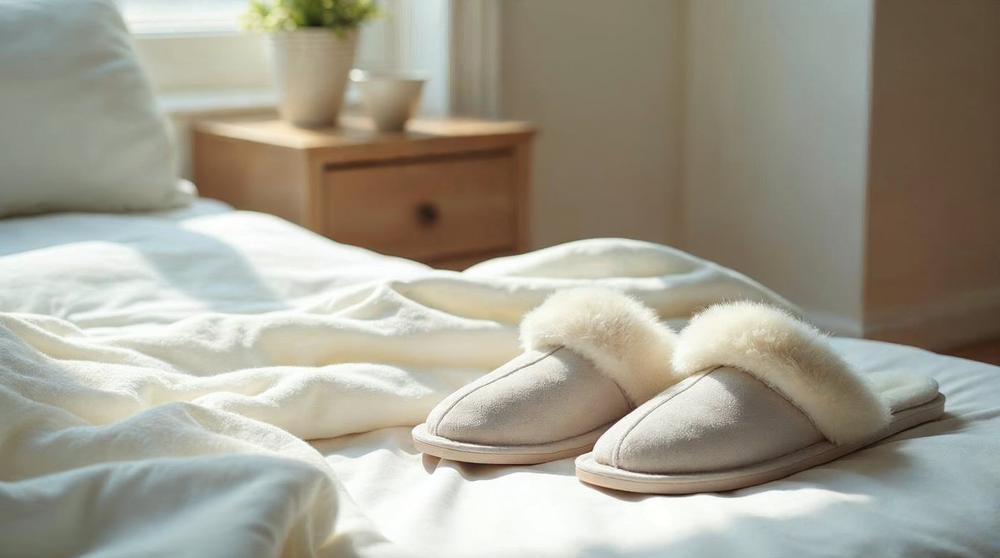
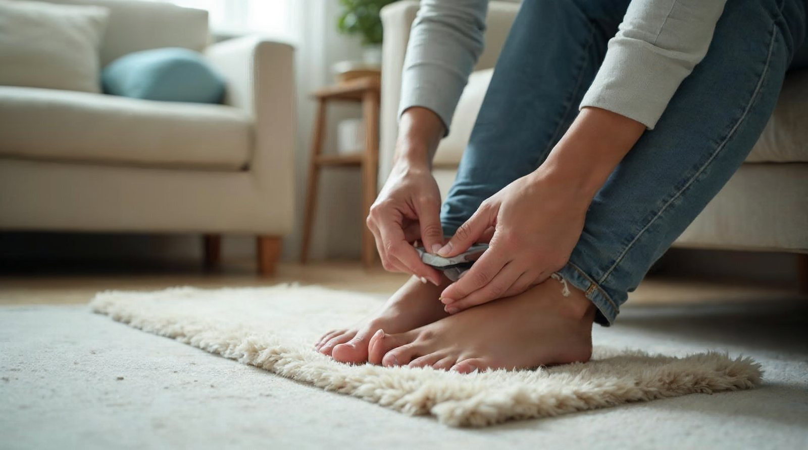
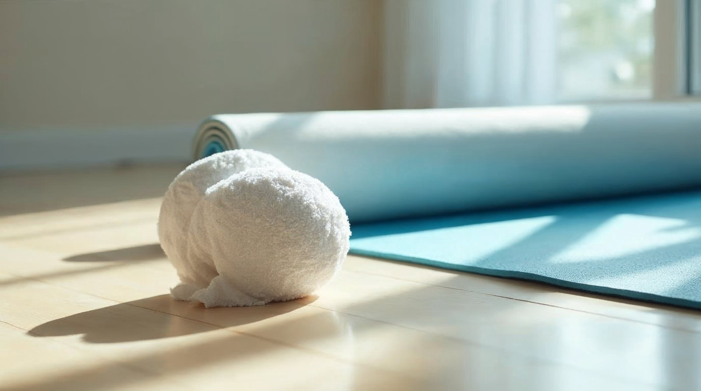
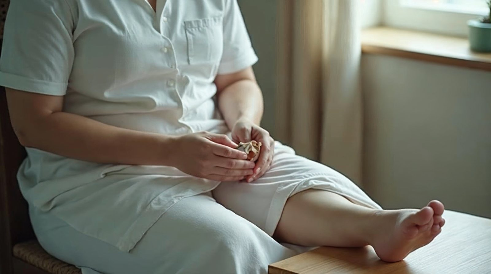
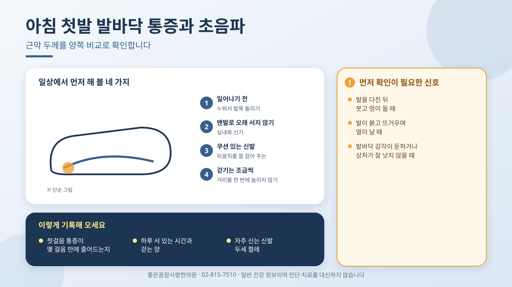

이종호 한의사 감수좋은꿈참사랑한의원 대표원장 (한의사 면허번호 19769)발행 2026-11-23 · 수정 2026-11-26
이 글의 차례
- 왜 이런 불편이 생길 수 있나요
- 발뒤꿈치 통증은 비슷한 다른 불편과 어떻게 구분하나요?
- 먼저 이렇게 여쭙니다
- 초음파 화면에서는 무엇을 함께 보나요?
- 일상에서 먼저 해 볼 수 있는 것
- 아침 첫걸음 전에는 어떻게 움직여 보면 좋을까요?
- 상황별 예시
- 신발은 어떤 점을 보고 고르면 좋을까요?
- 스스로 점검해 보세요
- 계절과 생활이 바뀔 때 더 아파지는 이유는 무엇일까요?
- 걷기 운동은 언제부터 다시 늘리면 될까요?
- 한의원에서 함께 살필 수 있는 경우
- 발이 아픈 뒤로 무릎이나 허리까지 불편해졌다면?
- 첫 방문은 이렇게 진행됩니다
- 얼마나 지켜보고 언제 상담할까요
- 이렇게 기록해 오시면 상담이 쉬워집니다
- 이런 증상은 먼저 확인이 필요합니다
- 관련 글
아침 첫발이 아픈 발바닥 통증은 초음파로 발바닥 근막이 발뒤꿈치에 붙는 부위의 두께와 주변 상태를 확인하고, 아프지 않은 쪽과 비교해 볼 수 있습니다. 침대에서 내려와 첫발을 디딜 때 찌릿하다가 몇 걸음 걸으면 나아진다는 분이 많습니다. 오래 서서 일하거나 걷기 운동을 갑자기 늘린 분에게서 자주 듣는 이야기입니다.
다만 화면에서 근막이 두꺼워 보인다는 것만으로 통증의 원인을 단정하지는 않습니다. 첫걸음 통증이 몇 걸음 만에 풀리는지, 발뒤꿈치 어느 지점을 누르면 아픈지, 하루에 얼마나 서 있는지를 함께 놓고 봅니다. 쉬고 있을 때나 밤에도 아프거나 발이 저리고 화끈거린다면 근막 말고 다른 원인을 먼저 살펴야 할 수 있습니다.
왜 이런 불편이 생길 수 있나요
- 발바닥 근막은 발뒤꿈치에서 발가락까지 아치를 받치는 두꺼운 막인데, 체중을 반복해서 받으면 뒤꿈치에 붙는 자리에 부담이 쌓일 수 있습니다.
- 밤사이 발이 쉬는 동안 근막이 짧아진 채 있다가 아침 첫걸음에 갑자기 당겨지며 아플 수 있습니다.
- 딱딱한 바닥에서 오래 서 있기, 쿠션 없는 신발, 걷기량의 갑작스러운 증가가 부담을 더할 수 있습니다.
- 종아리 근육이 뻣뻣하면 발바닥으로 당기는 힘이 커지기도 합니다.
- 체중이 짧은 기간에 늘었거나 발 아치가 많이 낮거나 높은 경우에도 같은 자리에 힘이 몰리기 쉽습니다.
- 발뒤꿈치 뒤쪽이 아프면 아킬레스힘줄 쪽을, 발바닥이 저리거나 화끈거리면 신경 쪽을 먼저 생각해 보는 등 아픈 위치와 느낌에 따라 살필 곳이 달라집니다.
발뒤꿈치 통증은 비슷한 다른 불편과 어떻게 구분하나요?
발뒤꿈치가 아프다고 해서 모두 발바닥 근막 문제는 아닙니다. 저는 먼저 손가락 하나로 가장 아픈 자리를 짚어 달라고 부탁드립니다. 아픈 위치와 아픈 때를 함께 들으면 어디부터 살필지가 꽤 좁혀집니다.
- 발뒤꿈치 안쪽 아래가 아침 첫걸음에 가장 아프고 걸으면 덜해진다면 근막이 뒤꿈치에 붙는 자리를 먼저 살핍니다.
- 뒤꿈치 한가운데가 딱딱한 바닥에서 오래 걸을수록 멍든 것처럼 아프다면, 뒤꿈치 아래 지방 쿠션이 얇아진 경우도 함께 생각합니다.
- 뒤꿈치 뒤쪽, 신발 뒤축이 닿는 자리가 아프다면 아킬레스힘줄이 붙는 부위를 봅니다.
- 처음엔 괜찮다가 걸을수록 점점 더 아프고, 뼈 한 지점을 누르면 아프다면 뼈에 무리가 간 경우를 놓치지 않으려 합니다.
이렇게 나눠 보는 것은 집에서 할 일이 서로 다르기 때문입니다. 근막 쪽이면 늘리기가 도움이 되는 경우가 많고, 지방 쿠션 쪽이면 뒤꿈치를 감싸 주는 신발과 바닥이 더 중요해집니다.
먼저 이렇게 여쭙니다
- 아침 첫걸음이나 오래 앉았다 일어설 때 아픈가요?
- 발뒤꿈치 아래 어느 지점이 아픈가요?
- 최근 걷기나 등산이 늘었나요?
- 평소 어떤 신발을 신고, 하루 몇 시간 서 계시나요?
- 쉬고 있을 때나 밤에도 아프거나, 발이 저린 느낌이 있나요?
- 당뇨가 있거나 발을 다친 적이 있나요?
양쪽 발이 함께 아픈지, 한쪽만 아픈지도 여쭙니다. 양쪽이 비슷하게 아프면 신발과 서 있는 시간 같은 생활 쪽을, 한쪽만 아프면 그쪽 발목을 예전에 다친 일이나 걷는 습관을 조금 더 자세히 살펴봅니다.
초음파 화면에서는 무엇을 함께 보나요?
필요하다고 판단되면 엎드리거나 다리를 편하게 뻗은 자세에서 발뒤꿈치 아래에 젤을 바르고 화면을 띄웁니다. 아프지 않은 쪽부터 먼저 보고 아픈 쪽을 이어서 보면 차이가 눈에 잘 들어옵니다.
- 근막이 뒤꿈치에 붙는 자리의 두께가 반대쪽과 얼마나 다른지
- 근막의 결이 고르게 보이는지, 일부가 흐리고 어둡게 보이는지
- 근막 주변에 물이 고인 듯한 모습이 있는지
- 손으로 짚어 가장 아팠던 지점과 화면에서 달라 보이는 자리가 겹치는지
화면을 보시며 궁금한 점은 그 자리에서 물어보셔도 됩니다. 다만 초음파로는 뼈 속까지 보기 어려워, 뼈 쪽이 의심되면 영상 검사가 가능한 곳을 안내해 드립니다.
다시 오셨을 때 같은 자리를 다시 보는 경우도 있습니다. 다만 아침 통증이 먼저 줄고 화면의 두께는 천천히 따라오는 경우가 있어, 화면의 변화보다 첫걸음이 어떻게 달라졌는지를 더 무겁게 듣습니다.

일상에서 먼저 해 볼 수 있는 것
- 아침에 일어나기 전 누운 채로 발목을 천천히 돌리고 발가락을 당기기
- 딱딱한 바닥에서 맨발로 오래 서 있지 않기(실내화 신기)
- 쿠션이 있고 뒤꿈치를 잘 잡아 주는 신발 신기
- 벽을 짚고 종아리를 20~30초씩 가볍게 늘리기를 하루 2~3번
- 걷기 운동은 거리를 한 번에 늘리지 말고 조금씩 늘리기
- 아픈 동안에는 오래 뛰거나 등산처럼 발뒤꿈치에 충격이 큰 운동을 잠시 줄이기
아침 첫걸음 전에는 어떻게 움직여 보면 좋을까요?
아침 통증은 밤새 짧아져 있던 근막이 첫걸음에 한꺼번에 당겨지며 생기는 경우가 많습니다. 그래서 침대에서 바로 일어서기보다 1~2분쯤 발을 먼저 깨워 주는 순서를 권합니다.
- 누운 채로 발목을 위아래로 천천히 열 번 움직입니다.
- 앉아서 수건을 발바닥 앞쪽에 걸고 양손으로 몸 쪽으로 20초쯤 당겼다 놓기를 세 번 합니다.
- 아픈 쪽 발을 반대쪽 무릎에 올리고 손으로 발가락을 발등 쪽으로 젖혀 발바닥이 팽팽해지는 느낌을 잠시 유지합니다.
- 일어설 때는 침대 옆에 둔 실내화를 먼저 신고 디딥니다.
낮에는 의자에 앉아 발바닥으로 작은 물병을 굴리며 가볍게 풀어 주셔도 됩니다. 아플 만큼 세게 누르지는 마시고, 시원하다 싶은 정도에서 멈춥니다.
걷기 운동이 끝난 저녁에는 종아리를 벽에 대고 늘린 뒤 발을 심장보다 조금 높게 올려 쉬어 보세요. 다음 날 아침 첫걸음이 어땠는지 휴대폰 메모에 한 줄씩 남겨 두시면 진료 때 함께 보기 좋습니다.

상황별 예시
- 예를 들어 매장에서 하루 종일 딱딱한 바닥에 서서 일하는 직장인이라면, 퇴근 무렵보다 다음 날 아침 첫걸음이 더 아프다고 말씀하시는 경우가 많습니다. 쉬는 시간마다 잠깐 앉아 발을 쉬게 하고, 근무화의 뒤꿈치 쿠션이 닳지 않았는지부터 살펴봅니다.
- 예를 들어 걷기 운동을 시작하면서 몇 주 만에 걸음 수를 크게 늘린 경우라면, 늘린 시점과 통증이 시작된 시점을 나란히 놓고 봅니다. 걷는 양을 아프기 전 수준으로 잠시 줄였다가 며칠 단위로 조금씩 다시 늘려 봅니다.
- 예를 들어 당뇨가 있는 어르신이 발뒤꿈치가 아프다고 하시는 경우에는 통증보다 먼저 발바닥 감각과 작은 상처가 없는지를 확인합니다. 감각이 둔하면 상처를 늦게 알아차릴 수 있어 담당 의료기관과 함께 살피도록 안내합니다.
신발은 어떤 점을 보고 고르면 좋을까요?
발바닥 통증으로 오신 분의 신발을 보면 뒤축이 납작하게 주저앉았거나 바닥이 한쪽으로 닳아 있는 경우가 많습니다. 새 신발을 고를 때는 아래 몇 가지를 손으로 직접 확인해 보세요.
- 뒤꿈치를 감싸는 뒤축을 손가락으로 눌렀을 때 쉽게 찌그러지지 않는지
- 신발을 접었을 때 발가락 쪽에서 꺾이고, 가운데가 맥없이 접히지 않는지
- 뒤꿈치 쪽 바닥에 쿠션이 있고, 맨발로 섰을 때보다 발이 편한지
- 발이 붓는 오후에 신어 보아도 앞쪽이 꽉 끼지 않는지
밑창이 얇은 슬리퍼나 바닥이 딱딱한 구두를 하루 종일 신는 날이 많다면, 출퇴근길만이라도 쿠션 있는 신발로 바꿔 보는 것부터 시작해 볼 수 있습니다. 자주 신는 신발은 진료 때 신고 오시면 바닥 닳은 모양을 함께 보며 이야기할 수 있습니다.
스스로 점검해 보세요
- 아침 첫 몇 걸음이 가장 아프고, 조금 걸으면 덜해진다.
- 오래 앉아 있다가 일어나 첫발을 디딜 때 다시 아프다.
- 발뒤꿈치 안쪽 아래 한 지점을 엄지로 누르면 콕 찌르듯 아프다.
- 무릎을 편 채 발끝을 몸 쪽으로 당기면 종아리가 유난히 당긴다.
- 자주 신는 신발의 뒤꿈치 쿠션이 닳았거나 한쪽으로 기울었다.
- 쉬고 있을 때나 밤에도 아프고, 발이 저리거나 화끈거린다.
앞의 다섯 가지는 생활 조정부터 해 볼 신호이고, 마지막 항목에 해당하면 먼저 확인을 받아 보세요.
계절과 생활이 바뀔 때 더 아파지는 이유는 무엇일까요?
발바닥 통증은 계절을 타는 경우가 있습니다. 여름에는 바닥이 얇은 슬리퍼와 샌들을 오래 신고, 겨울에는 난방된 집에서 맨발로 딱딱한 마루를 오래 걷게 되기 때문입니다.
- 이사나 이직으로 바닥 재질이 바뀐 뒤 아프기 시작했는지 떠올려 봅니다.
- 휴가지에서 하루 이만 보 넘게 걸은 뒤 시작된 통증은 걷는 양을 먼저 되돌려 봅니다.
- 집에서는 쿠션 있는 실내화를 현관 대신 침대 옆에 두면 아침 첫걸음부터 챙길 수 있습니다.
걷기 운동은 언제부터 다시 늘리면 될까요?
저는 다음 날 아침 첫걸음을 기준으로 삼으시라고 말씀드립니다. 전날 걸은 양이 몸에 맞았는지는 그날 저녁보다 다음 날 아침에 더 잘 드러나기 때문입니다.
- 아침 첫걸음 통증이 사흘 연속 비슷하거나 줄었다면 걷는 시간을 5~10분쯤 늘려 봅니다.
- 늘린 다음 날 아침 통증이 뚜렷하게 커졌다면 그 전 단계로 돌아가 며칠 더 머뭅니다.
- 평지에서 편해진 뒤에 언덕길과 계단, 등산을 차례로 더해 갑니다.

한의원에서 함께 살필 수 있는 경우
- 발바닥 통증이 이어지는 경우 필요하다고 판단되면 초음파로 근막 두께를 확인하고 양쪽을 비교합니다.
- 필요하다고 판단되면 체외충격파, 침 등을 상태에 맞게 검토합니다.
- 걷는 모습과 신발을 함께 살핍니다.
발이 아픈 뒤로 무릎이나 허리까지 불편해졌다면?
발뒤꿈치가 아프면 자연스럽게 그쪽을 덜 디디려고 발끝이나 발 바깥쪽으로 걷게 됩니다. 이런 걸음이 몇 주 이어지면 반대쪽 무릎이나 허리 한쪽이 뻐근해졌다고 말씀하시는 분이 있습니다.
그래서 저는 발만 보지 않고 걷는 모습 전체를 봅니다. 아픈 발을 디딜 때 몸이 어느 쪽으로 기우는지, 보폭이 양쪽 같은지, 신발 바닥이 어느 쪽으로 닳는지를 함께 살피면 발 통증이 다른 곳에 얼마나 영향을 주고 있는지 짐작할 수 있습니다.
집에서는 거울 앞에서 천천히 걸어 보며 아픈 쪽으로 디딜 때 어깨가 내려가지 않는지 한번 살펴보세요. 가족에게 뒤에서 걷는 모습을 짧게 찍어 달라고 하셔도 좋습니다.

첫 방문은 이렇게 진행됩니다
- 이야기 듣기: 아침 첫걸음 통증이 몇 걸음 만에 줄어드는지, 하루에 서고 걷는 시간, 자주 신는 신발, 최근 운동량 변화를 먼저 충분히 듣습니다.
- 맥 짚기와 몸 살피기: 모든 분께 맥부터 짚어 잠과 피로, 다리 붓기, 손발의 온기까지 몸 전체 상태를 살핍니다.
- 발과 다리 확인: 서 있는 모습과 걷는 모습을 보고, 발뒤꿈치와 발바닥, 종아리까지 눌러 가장 아픈 지점을 찾아 표시해 둡니다.
- 초음파로 함께 보기: 필요하다고 판단될 때 양쪽 발뒤꿈치 아래 근막의 두께와 주변을 화면으로 함께 보며 설명드립니다.
- 방향 정하기: 체외충격파(제우스·한일티엠) 가운데 부위에 맞는 장비, 침, 약침, 온열 등을 상태에 맞춰 정하고, 귀가 전에는 아침 첫걸음 전에 해 볼 동작과 신발 고르는 법을 알려 드립니다.
- 다음 방문: 지난번 아침 첫걸음이 그사이 어땠는지 이어서 여쭙고, 처음 표시한 지점을 같은 방법으로 다시 확인합니다.
얼마나 지켜보고 언제 상담할까요
- 신발 바꾸기, 종아리 늘리기, 서 있는 시간 나누기를 2주쯤 이어 가며 아침 첫걸음 통증이 몇 걸음 만에 풀리는지 적어 봅니다.
- 2~3주가 지나도 그대로이거나 걷는 모습이 달라질 만큼 아프면 상담을 받아 보세요.
- 통증이 줄었다고 바로 오래 걷거나 뛰면 다시 불편해지는 경우가 있어, 다음 날 아침 첫걸음을 기준으로 걷는 양을 며칠 단위로 늘립니다.
이렇게 기록해 오시면 상담이 쉬워집니다
- 아침 첫걸음 통증이 몇 걸음 만에 줄어드는지
- 하루 서 있는 시간과 걷는 양(걸음 수 앱)
- 자주 신는 신발 두세 켤레(가능하면 신고 오기)
- 통증이 시작되기 전 몇 주 사이 달라진 일(운동량, 체중, 일하는 곳 바닥)
- 당뇨가 있다면 최근 혈당과 발 상처 여부
이런 증상은 먼저 확인이 필요합니다
- 넘어지는 등 발을 다친 뒤 붓거나 멍이 들거나, 디디기 어려울 만큼 아픈 경우
- 발이 붉고 뜨겁게 부어오르는 경우
이런 신호가 있으면 한의원보다 가까운 병원이나 응급실을 먼저 찾으세요.
관련 글

여쭙는 것
- 아침 첫걸음이나 오래 앉았다 일어설 때 아픈가요?
- 발뒤꿈치 아래 어느 지점이 아픈가요?
- 최근 걷기나 등산이 늘었나요?
생활에서 해 볼 것
- 아침에 일어나기 전 누운 채로 발목을 천천히 돌리고 발가락을 당기기
- 딱딱한 바닥에서 맨발로 오래 서 있지 않기(실내화 신기)
- 쿠션이 있고 뒤꿈치를 잘 잡아 주는 신발 신기
한의원에서 함께 살필 것
- 발바닥 통증이 이어지는 경우 필요하다고 판단되면 초음파로 근막 두께를 확인하고 양쪽…
- 필요하다고 판단되면 체외충격파, 침 등을 상태에 맞게 검토합니다.
- 걷는 모습과 신발을 함께 살핍니다.
먼저 확인이 필요한 신호
- 넘어지는 등 발을 다친 뒤 붓거나 멍이 들거나, 디디기 어려울 만큼 아픈 경우
- 발이 붉고 뜨겁게 부어오르는 경우
한눈에 보는 표
| 구분 | 핵심 |
|---|---|
| 여쭙는 것 | 아침 첫걸음이나 오래 앉았다 일어설 때 아픈가요? 발뒤꿈치 아래 어느 지점이 아픈가요? |
| 생활에서 해 볼 것 | 아침에 일어나기 전 누운 채로 발목을 천천히 돌리고 발가락을 당기기 딱딱한 바닥에서 맨발로 오래 서 있지 않기(실내화 신기) |
| 한의원에서 함께 살필 것 | 발바닥 통증이 이어지는 경우 필요하다고 판단되면 초음파로 근막 두께를 확인하고 양쪽을 비교합니다. 필요하다고 판단되면 체외충격파, 침 등을 상태에 맞게 검토합니다. |
| 먼저 확인이 필요한 신호 | 넘어지는 등 발을 다친 뒤 붓거나 멍이 들거나, 디디기 어려울 만큼 아픈 경우 발이 붉고 뜨겁게 부어오르는 경우 |
자주 묻는 질문
초음파로 두께를 재면 숫자로 알려 주나요?
필요하면 화면에서 두께를 재어 아프지 않은 쪽과 비교해 설명해 드립니다. 다만 숫자 하나로 상태를 판단하지는 않고, 아침 첫걸음 통증과 누르면 아픈 자리를 함께 봅니다.
당뇨가 있으면 무엇을 더 살피나요?
발 감각과 피부 상태, 작은 상처가 없는지를 함께 살핍니다. 최근 당화혈색소 결과가 있으면 가져와 주세요.
깔창을 바꾸면 나아지나요?
발 모양과 걷는 모습에 따라 다릅니다. 깔창 하나만 바꾸기보다 서 있는 시간과 종아리 상태를 함께 조정하는 경우가 많아, 신발을 함께 보며 어떤 것이 맞을지 이야기합니다.
하루 종일 서서 일해야 하는데 어떻게 하면 좋을까요?
일하는 중간중간 잠깐 앉아 발을 쉬게 하고, 서 있는 자리에 매트를 깔 수 있는지 살펴보세요. 근무화의 뒤축과 쿠션 상태도 진료 때 함께 봅니다.
진료 시간은 어떻게 되나요?
좋은꿈참사랑한의원은 평일 09:30~20:00(점심 13:00~14:00), 토·일·공휴일 09:30~15:00에 진료합니다.
좋은꿈참사랑한의원은 재진 때 지난번 이야기부터 이어서 여쭙니다. 진료시간과 예약은 오시는 길에서 확인하세요.
어디서 상담받을 수 있나요?
좋은꿈참사랑한의원은 서울 동작구 만양로2길 2 신성빌딩 3층·5층(서울 동작구 상도동, 7호선 상도역 3번 출구 근처)에 있습니다. 한의사 3명(이종호 대표원장, 조영기 수석진료원장, 정원영 진료원장)이 진료합니다. 진료시간은 평일 09:30~20:00(점심 13:00~14:00), 토·일·공휴일 09:30~15:00이며, 방문 전 전화로 확인을 권합니다. 예약은 네이버 예약, 카카오톡 상담, 전화 02-815-7510로 받습니다.
이 글은 일반적인 건강 정보이며 개인의 진단이나 치료를 대신하지 않습니다. 증상이 있거나 복용 중인 약이 있다면 진료를 통해 확인하세요. 치료 효과는 개인마다 다를 수 있습니다.
작성 기준: 일반적으로 알려져 있는 건강 정보를 참고해 정리했습니다(대표원장 감수). 증상 기록은 1~2주 동안 하루 1회, 비슷한 시간에 적어 오시면 지난 상태와 비교하기 쉽습니다.